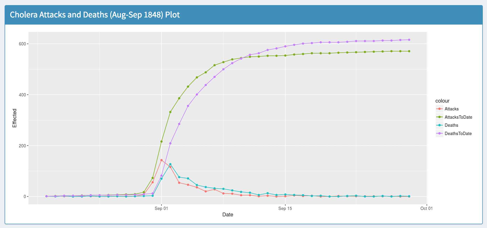
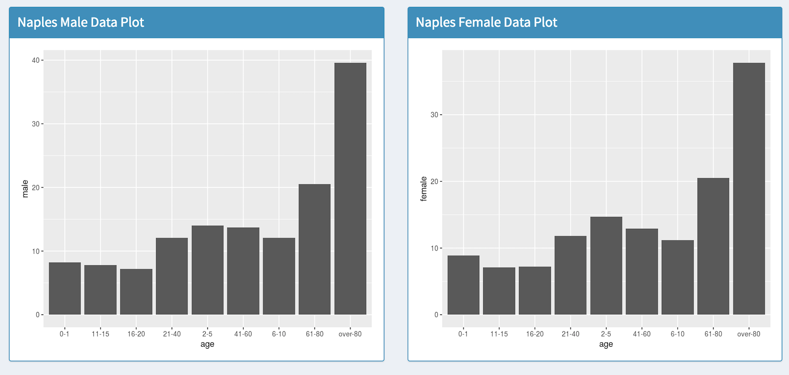
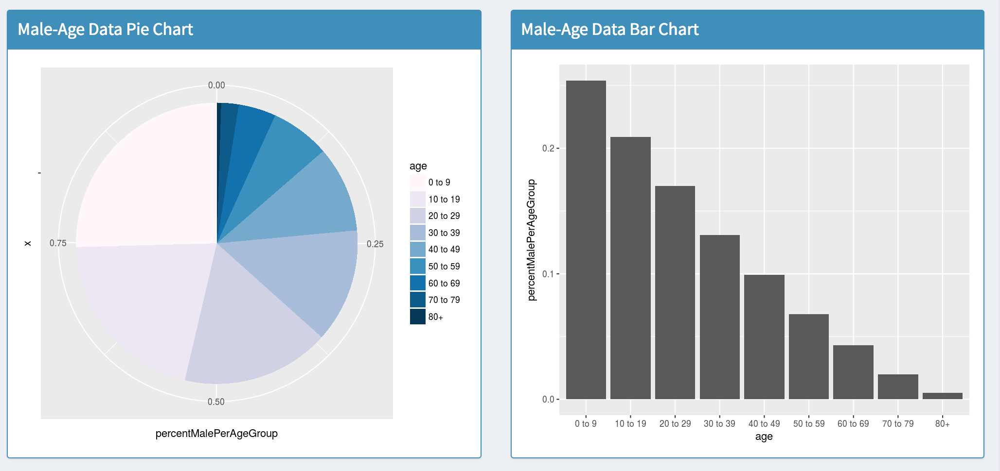

This map is particularly interesting to note because by taking a closer look you will notice that there is a very particular
area on the map that seems to have a high number of cholera related deaths. The large circle had 15 deaths near a pump. Another thing to note that
area surronding that pump seemed to have a lot of deaths as well. By using the ineractive map tools you will notice that this is generally true for any area
that has such a pump in the vicinity.

Interesting Finding #2
This line graph is especially interesting because although you notice that the amount of death and attack per day is increasing the cumalative sum of
the attacks and deaths paints a very real pictue of the massive loss that occured during this outbreak. We begin to see this exponential curve steadily
level out only after some time. Perhaps countermeasures were put in place, but if it continued to grow at the exponential rate there very likely might not
have existed present day.


Interesting Finding #3
Initially if you take a look at the bar chart on the left you would be inclined to think that the fatality percent for age group of 80+ is extremely high.
You might even be inclined to think that people of such an age group are more effected by this cholera outbreak! However, if you take a look at the pie chart on the left
based on UK census data you will notice that the percent population of 80+ individuals is very low (very marginal).